Generalized Linear Model¶
Let 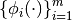 be a set of basis functions (see Basis). We think of a Generalized Linear Model (GLM) is a parametrization of a subspace of the functions 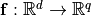:
(1)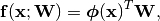
where 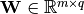 is the weight matrix, and
(2)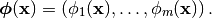
Usually, the weights 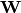 are not fixed, but its column is has a multi-variate Gaussian distribution:
(3)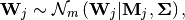
for 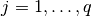, where 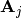 is the  -th
column of the matrix
-th
column of the matrix  , 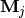 is the mean
of and semi-positive definite 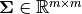
mean of column and the covariance matrix, respectively.
Notice that we have restricted our attention to covariance
matrices independent of the output dimension. This is very restrictive
but in practice, there are ways around this problem. Giving a more
general definition would make it extremely difficult to store all
the required information (we would need a 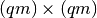
covariance matrix). In any case, this is the model we use in our
RVM paper.
, 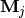 is the mean
of and semi-positive definite 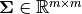
mean of column and the covariance matrix, respectively.
Notice that we have restricted our attention to covariance
matrices independent of the output dimension. This is very restrictive
but in practice, there are ways around this problem. Giving a more
general definition would make it extremely difficult to store all
the required information (we would need a 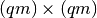
covariance matrix). In any case, this is the model we use in our
RVM paper.
Note
The distribution of the weights is to be thought as the posterior distribution for the weights that occures when you attempt to fit the model to some data.
Allowing for the possibility of some Gaussian noise, the predictive
distribution for the output  at the input point
at the input point
 is given by:
is given by:
(4)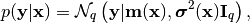
where 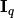 is the  -dimensional unit matrix,
while the mean and the variance at are given by:
-dimensional unit matrix,
while the mean and the variance at are given by:
(5)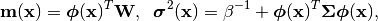
with  being the noise precision (i.e., the inverse variance).
being the noise precision (i.e., the inverse variance).
In BEST, we represent the GLM by a best.maps.GeneralizedLinearModel class which inherits from best.maps.Function. It is essentially a function that evaluates the predictive mean of the model. However, it also offers access to several other useful methods for uncertainty quantification. Here is the definition of best.maps.GeneralizedLinearModel:
- class GeneralizedLinearModel¶
Inherits : best.maps.Function A class that represents a Generalized Linear Model.
- __init__(basis[, weights=None[, sigma_sqrt=None[, beta=None[, name='Generalized Linear Model']]]])¶
Initialize the object.
Note
Notice that instead of the covariance matrix 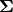, we initialize the object with its square root. The square root of is any matrix 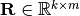 such that:
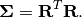
This is usefull, because we allow for a the treatment of a semi-positive definite covariance (i.e., when 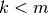). It is up to the user to supply the right 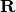 in there.
Parameters: - basis (best.maps.Function) – A set of basis functions.
- weights (2D numpy array of shape 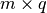) – The mean weights
 . If None, then it is assumed to be all zeros.
. If None, then it is assumed to be all zeros. - sigma_sqrt (2D numpy array of shape 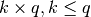) – The square root of the covariance materix. If None, then it is assumed to be all zeros.
- beta (float) – The noise precision (inverse variance). If unspecified, it is assumed to be a very big number.
- name (str) – A name for the object.
- __call__(x[, hyp=None])¶
Overloads : best.maps.Function.__call__() Evaluate the mean of the generalized model at x.
Essentially computed 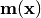.
- d(x[, hyp=None])¶
Overloads : best.maps.Function.d() Evaluate the Jacobian of the generalized model at x.
This is 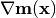.
- get_predictive_covariance(x)¶
Evaluate the predictive covariance at x.
Assume that x represents
 input points
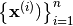.
Then, this method computes the semi-positive definite matrix
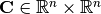, given by
input points
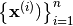.
Then, this method computes the semi-positive definite matrix
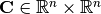, given by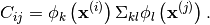
- get_predictive_variance(x)¶
Evaluate the predictive variance at x.
This is the diagonal of 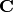 of best.maps.GeneralizedLinearModel.get_predictive_covariance(). However, it is computed without ever building .
- basis¶
Get the underlying basis.
- weights¶
Get the weights.
- sigma_sqrt¶
Get the square root of the covariance matrix.
- beta¶
Get the inverse precision.